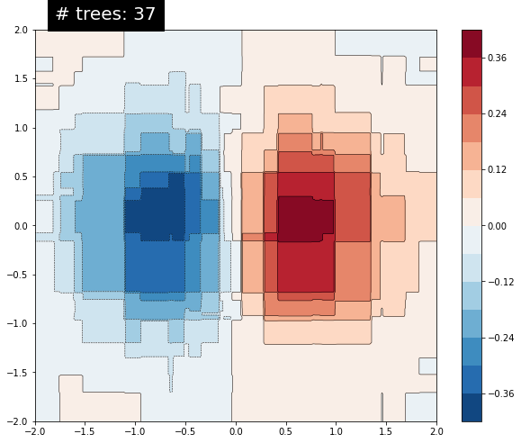

Análisis de la clasificación del Titanic usando boosted trees¶
30 min | Última modificación: Abril 8, 2020.
Basado en https://www.tensorflow.org/tutorials/estimator/boosted_trees_model_understanding
Importación de librerías¶
[1]:
import pandas as pd
import numpy as np
import seaborn as sns
import matplotlib.pyplot as plt
%matplotlib inline
import tensorflow as tf
print(tf.__version__)
#
# Establece el nivel de reporte en
# pantalla de TensorFlow
#
import logging
logger = tf.get_logger().setLevel(logging.ERROR)
2.1.0
Carga y configuración del dataset¶
[2]:
#
# Carga del dataset
#
dftrain = pd.read_csv("https://storage.googleapis.com/tf-datasets/titanic/train.csv")
dfeval = pd.read_csv("https://storage.googleapis.com/tf-datasets/titanic/eval.csv")
y_train = dftrain.pop("survived")
y_eval = dfeval.pop("survived")
#
# Verificación.
#
dftrain.head()
[2]:
| sex | age | n_siblings_spouses | parch | fare | class | deck | embark_town | alone | |
|---|---|---|---|---|---|---|---|---|---|
| 0 | male | 22.0 | 1 | 0 | 7.2500 | Third | unknown | Southampton | n |
| 1 | female | 38.0 | 1 | 0 | 71.2833 | First | C | Cherbourg | n |
| 2 | female | 26.0 | 0 | 0 | 7.9250 | Third | unknown | Southampton | y |
| 3 | female | 35.0 | 1 | 0 | 53.1000 | First | C | Southampton | n |
| 4 | male | 28.0 | 0 | 0 | 8.4583 | Third | unknown | Queenstown | y |
Semilla del generador de números aleatorios¶
[3]:
tf.random.set_seed(123)
Construcción del estimador¶
[4]:
CATEGORICAL_COLUMNS = [
"sex",
"n_siblings_spouses",
"parch",
"class",
"deck",
"embark_town",
"alone",
]
NUMERIC_COLUMNS = ["age", "fare"]
def one_hot_cat_column(feature_name, vocab):
return tf.feature_column.indicator_column(
tf.feature_column.categorical_column_with_vocabulary_list(feature_name, vocab)
)
#
# Se genera una lista que tiene el tipo de cada columna
#
feature_columns = []
for feature_name in CATEGORICAL_COLUMNS:
vocabulary = dftrain[feature_name].unique()
feature_columns.append(one_hot_cat_column(feature_name, vocabulary))
for feature_name in NUMERIC_COLUMNS:
feature_columns.append(
tf.feature_column.numeric_column(feature_name, dtype=tf.float32)
)
[5]:
NUM_EXAMPLES = len(y_train)
def make_input_fn(data_df, label_df, num_epochs=10, shuffle=True, batch_size=32):
def input_function():
ds = tf.data.Dataset.from_tensor_slices((dict(data_df), label_df))
if shuffle:
ds = ds.shuffle(NUM_EXAMPLES)
ds = ds.batch(batch_size).repeat(num_epochs)
return ds
return input_function
train_input_fn = make_input_fn(dftrain, y_train)
eval_input_fn = make_input_fn(dfeval, y_eval, num_epochs=1, shuffle=False)
[6]:
params = {
'n_trees': 50,
'max_depth': 3,
'n_batches_per_layer': 1,
'center_bias': True
}
est = tf.estimator.BoostedTreesClassifier(feature_columns, **params)
est.train(train_input_fn, max_steps=100)
[6]:
<tensorflow_estimator.python.estimator.canned.boosted_trees.BoostedTreesClassifier at 0x7f6e82d59e48>
[7]:
results = est.evaluate(eval_input_fn)
pd.Series(results).to_frame()
[7]:
| 0 | |
|---|---|
| accuracy | 0.734848 |
| accuracy_baseline | 0.625000 |
| auc | 0.819345 |
| auc_precision_recall | 0.761192 |
| average_loss | 0.494756 |
| label/mean | 0.375000 |
| loss | 0.480973 |
| precision | 0.659341 |
| prediction/mean | 0.383650 |
| recall | 0.606061 |
| global_step | 100.000000 |
Análisis¶
[9]:
pred_dicts = list(est.experimental_predict_with_explanations(eval_input_fn))
labels = y_eval.values
probs = pd.Series([pred['probabilities'][1] for pred in pred_dicts])
df_dfc = pd.DataFrame([pred['dfc'] for pred in pred_dicts])
df_dfc.describe().T
[9]:
| count | mean | std | min | 25% | 50% | 75% | max | |
|---|---|---|---|---|---|---|---|---|
| sex | 264.0 | -0.020522 | 0.154280 | -0.250366 | -0.131928 | -0.101715 | 0.131170 | 0.323551 |
| class | 264.0 | -0.001452 | 0.099613 | -0.166197 | -0.074558 | -0.055880 | 0.102376 | 0.269381 |
| age | 264.0 | 0.010371 | 0.100155 | -0.371482 | -0.047418 | -0.004958 | 0.080293 | 0.297075 |
| deck | 264.0 | -0.036994 | 0.055682 | -0.322857 | -0.059749 | -0.041687 | -0.031586 | 0.207330 |
| n_siblings_spouses | 264.0 | 0.029868 | 0.040258 | -0.092343 | 0.015465 | 0.022228 | 0.048924 | 0.131723 |
| embark_town | 264.0 | -0.020736 | 0.029902 | -0.195621 | -0.023443 | -0.017374 | -0.013929 | 0.040633 |
| alone | 264.0 | 0.004163 | 0.047366 | -0.120268 | -0.024474 | -0.015169 | 0.046422 | 0.163561 |
| fare | 264.0 | 0.064955 | 0.078269 | -0.046427 | 0.003521 | 0.052748 | 0.103028 | 0.445784 |
| parch | 264.0 | 0.010247 | 0.032331 | -0.123747 | 0.000981 | 0.002762 | 0.037567 | 0.080879 |
[10]:
#
# Sum of DFCs + bias == probabality.
#
bias = pred_dicts[0]["bias"]
dfc_prob = df_dfc.sum(axis=1) + bias
np.testing.assert_almost_equal(dfc_prob.values, probs.values)
[11]:
#
# Funciones auxiliares para graficación
#
def _get_color(value):
green, red = sns.color_palette()[2:4]
if value >= 0:
return green
return red
def _add_feature_values(feature_values, ax):
x_coord = ax.get_xlim()[0]
OFFSET = 0.15
for y_coord, (feat_name, feat_val) in enumerate(feature_values.items()):
t = plt.text(x_coord, y_coord - OFFSET, "{}".format(feat_val), size=12)
t.set_bbox(dict(facecolor="white", alpha=0.5))
from matplotlib.font_manager import FontProperties
font = FontProperties()
font.set_weight("bold")
t = plt.text(
x_coord, y_coord + 1 - OFFSET, "feature\nvalue", fontproperties=font, size=12
)
def plot_example(example):
TOP_N = 8
sorted_ix = example.abs().sort_values()[-TOP_N:].index
example = example[sorted_ix]
colors = example.map(_get_color).tolist()
ax = example.to_frame().plot(
kind="barh", color=[colors], legend=None, alpha=0.75, figsize=(10, 6)
)
ax.grid(False, axis="y")
ax.set_yticklabels(ax.get_yticklabels(), size=14)
_add_feature_values(dfeval.iloc[ID][sorted_ix], ax)
return ax
[12]:
ID = 182
example = df_dfc.iloc[ID]
TOP_N = 8
sorted_ix = example.abs().sort_values()[-TOP_N:].index
ax = plot_example(example)
ax.set_title('Feature contributions for example {}\n pred: {:1.2f}; label: {}'.format(ID, probs[ID], labels[ID]))
ax.set_xlabel('Contribution to predicted probability', size=14)
plt.show()

[13]:
sns_colors = sns.color_palette('colorblind')
def dist_violin_plot(df_dfc, ID):
# Initialize plot.
fig, ax = plt.subplots(1, 1, figsize=(10, 6))
# Create example dataframe.
TOP_N = 8 # View top 8 features.
example = df_dfc.iloc[ID]
ix = example.abs().sort_values()[-TOP_N:].index
example = example[ix]
example_df = example.to_frame(name="dfc")
# Add contributions of entire distribution.
parts = ax.violinplot(
[df_dfc[w] for w in ix],
vert=False,
showextrema=False,
widths=0.7,
positions=np.arange(len(ix)),
)
face_color = sns_colors[0]
alpha = 0.15
for pc in parts["bodies"]:
pc.set_facecolor(face_color)
pc.set_alpha(alpha)
# Add feature values.
_add_feature_values(dfeval.iloc[ID][sorted_ix], ax)
# Add local contributions.
ax.scatter(
example,
np.arange(example.shape[0]),
color=sns.color_palette()[2],
s=100,
marker="s",
label="contributions for example",
)
# Legend
# Proxy plot, to show violinplot dist on legend.
ax.plot(
[0, 0],
[1, 1],
label="eval set contributions\ndistributions",
color=face_color,
alpha=alpha,
linewidth=10,
)
legend = ax.legend(loc="lower right", shadow=True, fontsize="x-large", frameon=True)
legend.get_frame().set_facecolor("white")
# Format plot.
ax.set_yticks(np.arange(example.shape[0]))
ax.set_yticklabels(example.index)
ax.grid(False, axis="y")
ax.set_xlabel("Contribution to predicted probability", size=14)
[14]:
dist_violin_plot(df_dfc, ID)
plt.title(
"Feature contributions for example {}\n pred: {:1.2f}; label: {}".format(
ID, probs[ID], labels[ID]
)
)
plt.show()

[15]:
importances = est.experimental_feature_importances(normalize=True)
df_imp = pd.Series(importances)
N = 8
ax = df_imp.iloc[0:N][::-1].plot(
kind="barh", color=sns_colors[0], title="Gain feature importances", figsize=(10, 6)
)
ax.grid(False, axis="y")

[16]:
dfc_mean = df_dfc.abs().mean()
N = 8
sorted_ix = dfc_mean.abs().sort_values()[-N:].index
ax = dfc_mean[sorted_ix].plot(
kind="barh",
color=sns_colors[1],
title="Mean |directional feature contributions|",
figsize=(10, 6),
)
ax.grid(False, axis="y")

[17]:
FEATURE = 'fare'
feature = pd.Series(df_dfc[FEATURE].values, index=dfeval[FEATURE].values).sort_index()
ax = sns.regplot(feature.index.values, feature.values, lowess=True)
ax.set_ylabel('contribution')
ax.set_xlabel(FEATURE)
ax.set_xlim(0, 100)
plt.show()

[18]:
def permutation_importances(est, X_eval, y_eval, metric, features):
"""Column by column, shuffle values and observe effect on eval set.
source: http://explained.ai/rf-importance/index.html
A similar approach can be done during training. See "Drop-column importance"
in the above article."""
baseline = metric(est, X_eval, y_eval)
imp = []
for col in features:
save = X_eval[col].copy()
X_eval[col] = np.random.permutation(X_eval[col])
m = metric(est, X_eval, y_eval)
X_eval[col] = save
imp.append(baseline - m)
return np.array(imp)
def accuracy_metric(est, X, y):
"""TensorFlow estimator accuracy."""
eval_input_fn = make_input_fn(data_df=X, label_df=y, shuffle=False)
result = est.evaluate(input_fn=eval_input_fn)["accuracy"]
return result
features = CATEGORICAL_COLUMNS + NUMERIC_COLUMNS
importances = permutation_importances(est, dfeval, y_eval, accuracy_metric, features)
df_imp = pd.Series(importances, index=features)
sorted_ix = df_imp.abs().sort_values().index
ax = df_imp[sorted_ix][-5:].plot(kind="barh", color=sns_colors[2], figsize=(10, 6))
ax.grid(False, axis="y")
ax.set_title("Permutation feature importance")
plt.show()

[19]:
from numpy.random import uniform, seed
from scipy.interpolate import griddata
# Create fake data
seed(0)
npts = 5000
x = uniform(-2, 2, npts)
y = uniform(-2, 2, npts)
z = x * np.exp(-(x ** 2) - y ** 2)
xy = np.zeros((2, np.size(x)))
xy[0] = x
xy[1] = y
xy = xy.T
[20]:
# Prep data for training.
df = pd.DataFrame({'x': x, 'y': y, 'z': z})
xi = np.linspace(-2.0, 2.0, 200),
yi = np.linspace(-2.1, 2.1, 210),
xi,yi = np.meshgrid(xi, yi)
df_predict = pd.DataFrame({
'x' : xi.flatten(),
'y' : yi.flatten(),
})
predict_shape = xi.shape
[21]:
def plot_contour(x, y, z, **kwargs):
plt.figure(figsize=(10, 8))
CS = plt.contour(x, y, z, 15, linewidths=0.5, colors="k")
CS = plt.contourf(
x, y, z, 15, vmax=abs(zi).max(), vmin=-abs(zi).max(), cmap="RdBu_r"
)
plt.colorbar()
plt.xlim(-2, 2)
plt.ylim(-2, 2)
[22]:
zi = griddata(xy, z, (xi, yi), method="linear", fill_value="0")
plot_contour(xi, yi, zi)
plt.scatter(df.x, df.y, marker=".")
plt.title("Contour on training data")
plt.show()

[23]:
fc = [tf.feature_column.numeric_column('x'),
tf.feature_column.numeric_column('y')]
[24]:
def predict(est):
"""Predictions from a given estimator."""
predict_input_fn = lambda: tf.data.Dataset.from_tensors(dict(df_predict))
preds = np.array([p["predictions"][0] for p in est.predict(predict_input_fn)])
return preds.reshape(predict_shape)
[25]:
train_input_fn = make_input_fn(df, df.z)
est = tf.estimator.LinearRegressor(fc)
est.train(train_input_fn, max_steps=500);
[26]:
plot_contour(xi, yi, predict(est))

[27]:
n_trees = 37 #@param {type: "slider", min: 1, max: 80, step: 1}
est = tf.estimator.BoostedTreesRegressor(fc, n_batches_per_layer=1, n_trees=n_trees)
est.train(train_input_fn, max_steps=500)
plot_contour(xi, yi, predict(est))
plt.text(-1.8, 2.1, '# trees: {}'.format(n_trees), color='w', backgroundcolor='black', size=20)
plt.show()
